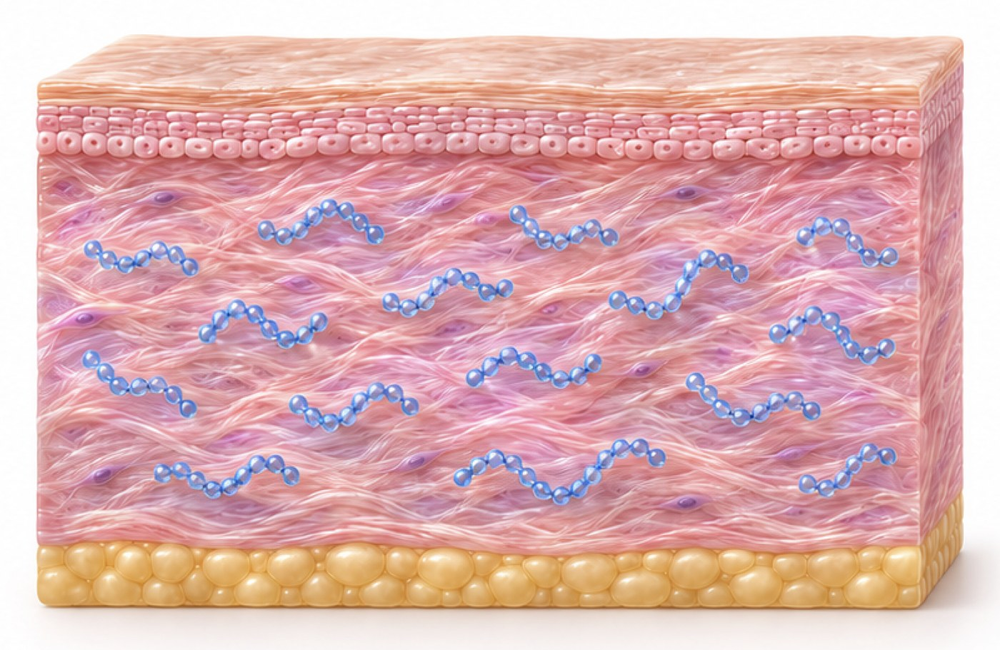
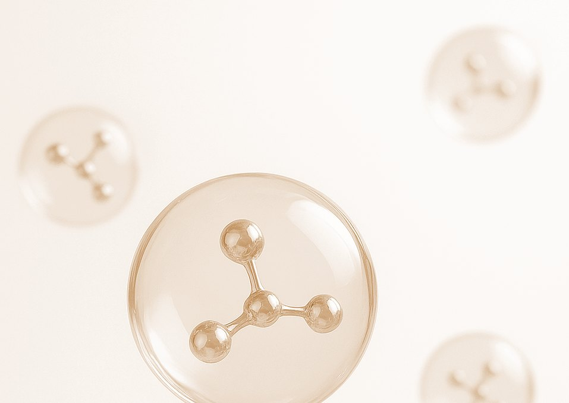
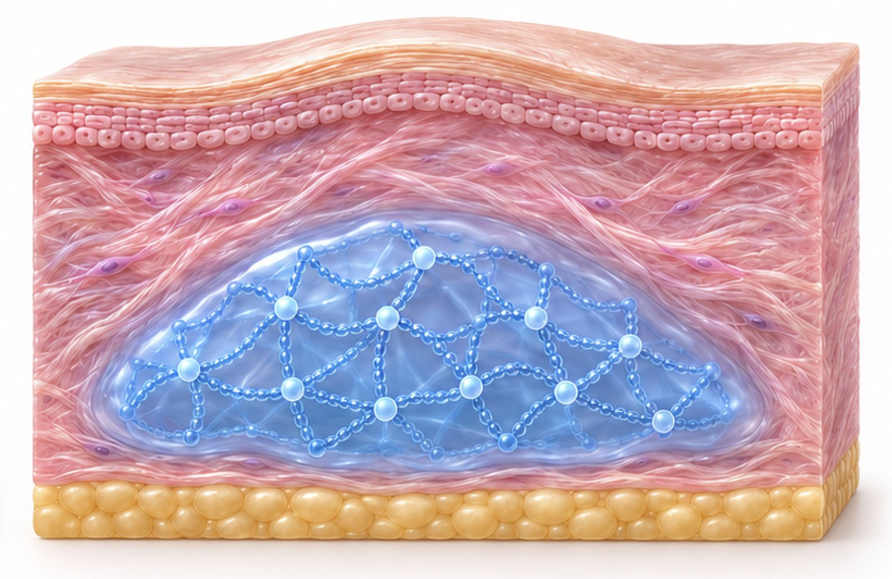

Non-crosslinked HA
Skin booster
- Concentration
- approx. 10 mg/mL
- Duration
- Metabolized in 2–4 weeks
- Purpose
- Hydration, texture, glow
How hyaluronic acid is linked decides how a filler behaves — how long it lasts, how it holds shape, and how safely it is absorbed.

Non-crosslinked HA spreads through the dermis and is absorbed within weeks. Cross-linking binds the chains into a cohesive gel that stays where it is placed — the basis of a dermal filler.


Same base material · Different molecular structure · Different clinical purpose
Illustration. Values shown are typical category ranges, not product-specific claims.
Orbital and axial rotational forces work together to build a uniform cross-linked HA network — so less cross-linker is needed and more hyaluronic acid is preserved.
Optimized viscoelasticity lets each DéMORO formula be tailored to a different anatomical zone, keeping natural movement and longevity.
Proprietary cross-linking innovation redefines safety and performance.
Cross-linking time is finely adjusted for each product's intended effect.
Targeted cross-linking rates reduce cross-linker use and preserve HA.
Only a minimal amount is required — for safe, natural, enduring effects.
In degradation testing, DéMORO kept a higher share of hyaluronic acid than two comparison products through most of the 144-hour period — 82% at 48 hours and 30% at 120 hours.
High-precision, multi-layered cross-linking turns HA into a high-viscosity, semi-solid gel of patented micro beads — without chemically altering the raw material.
HA is cross-linked in multiple controlled layers.
Density comes from structure, not from oversized particles.
Ultra-fine micro beads, versatile across face and body.
Raw material and finished product are both pure HA.
Schematic illustrations.